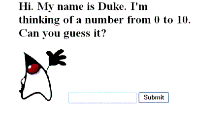

A Simple JavaServer Faces Application
This section describes the process of developing a simple JavaServer Faces application. You'll see what features a typical JavaServer Faces application contains and what part each role has in developing the application.
Steps in the Development Process
Developing a simple JavaServer Faces application usually requires these tasks:
These tasks can be done simultaneously or in any order. However, the people performing the tasks will need to communicate during the development process. For example, the page author needs to know the names of the objects in order to access them from the page.
The example used in this section is the
guessNumberapplication, located in the<INSTALL>/j2eetutorial14/examples/web/directory. It asks you to guess a number between 0 and 10, inclusive. The second page tells you whether you guessed correctly. The example also checks the validity of your input. The system log prints Duke's number. Figure 17-2 shows what the first page looks like.

Figure 17-2 The
greeting.jspPage of theguessNumberApplicationThe source for the
guessNumberapplication is located in the<INSTALL>/j2eetutorial14/examples/web/guessNumber/directory created when you unzip the tutorial bundle (see About the Examples). A sampleguessNumber.waris provided in<INSTALL>/j2eetutorial14/examples/web/provided-wars/.To build this example, follow these steps:
To package and deploy the example using
asant, follow these steps:To learn how to configure the example, use
deploytoolto package and deploy it:
- Start the Application Server.
- Start
deploytool.- Create a web application called
guessNumberby running the New Web Component wizard. Select FileNew
- In the New Web Component wizard:
- Select the Create New Stand-Alone WAR Module radio button.
- In the WAR File field, enter
<INSTALL>/j2eetutorial14/examples/web/guessNumber/guessNumber.war.- The WAR Display Name field shows
guessNumber.- In the Context Root field, enter
/guessNumber.- Click Edit Contents.
- In the Edit Contents dialog box, navigate to
<INSTALL>/j2eetutorial14/examples/web/guessNumber/build/. Select everything in thebuilddirectory and click Add.- In the Edit Contents dialog box, go back to
<INSTALL>/j2eetutorial14/examples/web/guessNumber/and selectfaces-config.xml. Click Add.- In the Contents of guessNumber pane, drag the
faces-config.xmlfile from the root level to theWEB-INFdirectory.- While in the Edit Contents dialog box, navigate to
<J2EE_HOME>/lib/and select thejsf-api.jar. Click Add, and then click OK.- Click Next.
- Select the Servlet radio button.
- Click Next.
- Select
javax.faces.webapp.FacesServletfrom the Servlet Class combo box.- In the Startup Load Sequence Position combo box, enter
1.- Click Finish.
- In the Web Component tabbed panes:
- Select File
- Deploy the application.
- Select Tools
- In the Connection Settings frame, enter the user name and password you specified when you installed the Application Server.
- Click OK.
- A pop-up dialog box will display the results of the deployment. Click Close.
To run the example, open the URL
http://localhost:8080/guessNumberin a browser.Creating the Pages
Creating the pages is the page author's responsibility. This task involves laying out UI components on the pages, mapping the components to beans, and adding other core tags.
Here is the
greeting.jsppage, the first page of theguessNumberapplication:<HTML> <HEAD> <title>Hello</title> </HEAD> <%@ taglib uri="http://java.sun.com/jsf/html" prefix="h" %> <%@ taglib uri="http://java.sun.com/jsf/core" prefix="f" %> <body bgcolor="white"> <f:view> <h:form id="helloForm" > <h2>Hi. My name is Duke. I'm thinking of a number from <h:outputText value="#{UserNumberBean.minimum}"/> to <h:outputText value="#{UserNumberBean.maximum}"/>. Can you guess it?</h2> <h:graphicImage id="waveImg" url="/wave.med.gif" /> <h:inputText id="userNo" value="#{UserNumberBean.userNumber}"> <f:validateLongRange minimum="#{UserNumberBean.minimum}" maximum="#{UserNumberBean.maximum}" /> </h:inputText> <h:commandButton id="submit" action="success" value="Submit" /> <p> <h:message style="color: red; font-family: 'New Century Schoolbook', serif; font-style: oblique; text-decoration: overline" id="errors1" for="userNo"/> </h:form> </f:view> </HTML>This page demonstrates a few important features that you will use in most of your JavaServer Faces applications. These features are described in the following subsections.
User Interface Component Model includes a table that lists all the component tags included with JavaServer Faces technology. Using the HTML Component Tags discusses the tags in more detail.
The form Tag
The
formtag represents an input form that allows the user to input some data and submit it to the server, usually by clicking a button. All UI component tags that represent editable components (such as text fields and menus) must be nested inside theformtag. In the case of thegreeting.jsppage, some of the tags contained in the form areinputText,commandButton, andmessage.The outputText Tag
The
outputTexttag represents a label. Thegreeting.jsppage has twooutputTexttags. One of the tags displays the number 0. The other tag displays the number 10:The
valueattributes of the tags get the values from theminimumandmaximumproperties ofUserNumberBeanusing value-binding expressions, which are used to reference data stored in other objects, such as beans. The page author could instead specify literal values using thevalueattributes of these tags. See Backing Bean Management for more information on value-binding expressions.The inputText Tag
The
inputTexttag represents a text field component. In theguessNumberexample, this text field takes an integer. The instance of this tag included ingreeting.jsphas two attributes:idandvalue.The
idattribute corresponds to the ID of the component object represented by this tag. If you don't include anidattribute, the JavaServer Faces implementation will generate one for you. See Using the HTML Component Tags for more information. In this case, theinputTexttag requires anidattribute because themessagetag needs to refer to theuserNocomponent.The
valueattribute binds theuserNocomponent value to the bean propertyUserNumberBean.userNumber, which holds the data entered into the text field. A page author can also bind a component instance to a property using the tag'sbindingattribute.See Backing Bean Management for more information on creating beans, binding to bean properties, referencing bean methods, and configuring beans.
See The UIInput and UIOutput Components for more information on the
inputTexttag.The commandButton Tag
The
commandButtontag represents the button used to submit the data entered in the text field. Theactionattribute specifies an outcome that helps the navigation mechanism decide which page to open next. Defining Page Navigation discusses this further. See The UICommand Component for more information on thecommandButtontag.The message Tag
The
messagetag displays an error message if the data entered in the field does not comply with the rules specified by theLongRangeValidatorimplementation. The error message displays wherever you place themessagetag on the page. Thestyleattribute allows you to specify the formatting style for the message text. Theforattribute refers to the component whose value failed validation, in this case theuserNocomponent represented by theinputTexttag in thegreeting.jsppage. Note that the tag representing the component whose value is validated must include anidattribute so that theforattribute of themessagetag can refer to it. See The UIMessage and UIMessages Components for more information on themessagetag.The validateLongRange Tag
By nesting the
validateLongRangetag within a component's tag, the page author registers aLongRangeValidatoronto the component. This validator checks whether the component's local data is within a certain range, defined by thevalidateLongRangetag'sminimumandmaximumattributes, which get the values from theminimumandmaximumproperties ofUserNumberBeanusing the value-binding expressions#{UserNumberBean.minimum}and#{UserNumberBean.maximum}. The page author can instead specify literal values with these attributes. See Backing Bean Management for details on value-binding expressions. For more information on the standard validators included with JavaServer Faces technology, see Using the Standard Validators.Defining Page Navigation
Defining page navigation involves determining which page to go to after the user clicks a button or a hyperlink. Navigation for the application is defined in the application configuration resource file using a powerful rule-based system. Here are the navigation rules defined for the
guessNumberexample:<navigation-rule> <from-view-id>/greeting.jsp</from-view-id> <navigation-case> <from-outcome>success</from-outcome> <to-view-id>/response.jsp</to-view-id> </navigation-case> </navigation-rule> <navigation-rule> <from-view-id>/response.jsp</from-view-id> <navigation-case> <from-outcome>success</from-outcome> <to-view-id>/greeting.jsp</to-view-id> </navigation-case> </navigation-rule>Each
navigation-ruleelement defines how to get from one page (specified in thefrom-view-idelement) to the other pages of the application. Thenavigation-ruleelements can contain any number ofnavigation-caseelements, each of which defines the page to open next (defined byto-view-id) based on a logical outcome (defined byfrom-outcome).The outcome can be defined by the
actionattribute of theUICommandcomponent that submits the form, as it is in theguessNumberexample:The outcome can also come from the return value of an action method in a backing bean. This method performs some processing to determine the outcome. For example, the method can check whether the password the user entered on the page matches the one on file. If it does, the method might return
success; otherwise, it might returnfailure. An outcome offailuremight result in the logon page being reloaded. An outcome ofsuccessmight cause the page displaying the user's credit card activity to open. If you want the outcome to be returned by a method on a bean, you must refer to the method using a method-binding expression, using theactionattribute, as shown by this example:To learn more about how navigation works and how to define navigation rules, see Navigation Model and Configuring Navigation Rules. For information on referencing an action method, see Referencing a Method That Performs Navigation. For information on writing an action method, see Writing a Method to Handle Navigation.
Developing the Beans
Developing beans is one responsibility of the application developer. The page author and the application developer--if they are two different people--will need to work in tandem to make sure that the component tags refer to the proper UI component properties, to ensure that the properties have the acceptable types, and to take care of other such details.
A typical JavaServer Faces application couples a backing bean with each page in the application. The backing bean defines properties and methods that are associated with the UI components used on the page. Each backing bean property is bound to either a component instance or its value.
A backing bean can also define a set of methods that perform functions for the component, such as validating the component's data, handling events that the component fires, and performing processing associated with navigation when the component is activated.
The page author binds a component's value to a bean property using the component tag's
valueattribute to refer to the property. Similarly, the page author binds a component instance to a bean property by referring to the property using the component tag'sbindingattribute.Here is the
UserNumberBeanbacking bean property that maps to the data for theuserNocomponent:Integer userNumber = null; ... public void setUserNumber(Integer user_number) { userNumber = user_number; } public Integer getUserNumber() { return userNumber; } public String getResponse() { if(userNumber != null && userNumber.compareTo(randomInt) == 0) { return "Yay! You got it!"; } else { return "Sorry, "+userNumber+" is incorrect."; } }As you can see, this bean property is just like any other bean property: It has a set of accessor methods and a private data field. This means that you can reference beans you've already written from your JavaServer Faces pages.
A property can be any of the basic primitive and numeric types or any Java object type for which an appropriate converter is available. JavaServer Faces technology automatically converts the data to the type specified by the bean property. See Writing Component Properties for information on which types are accepted by which component tags.
You can also use a converter to convert the component's value to a type not supported by the component's data. See Creating a Custom Converter for more information on applying a converter to a component.
In addition to binding components and their values to backing bean properties using component tag attributes, the page author can refer to a backing bean method from a component tag. See Backing Bean Management for more information on referencing methods from a component tag.
Adding Managed Bean Declarations
After developing the backing beans to be used in the application, you need to configure them in the application configuration resource file so that the JavaServer Faces implementation can automatically create new instances of the beans whenever they are needed.
The task of adding managed bean declarations to the application configuration resource file is the application architect's responsibility. Here is a managed bean declaration for
UserNumberBean:<managed-bean> <managed-bean-name>UserNumberBean</managed-bean-name> <managed-bean-class> guessNumber.UserNumberBean </managed-bean-class> <managed-bean-scope>session</managed-bean-scope> <managed-property> <property-name>minimum</property-name> <property-class>long</property-class> <value>0</value> </managed-property> <managed-property> <property-name>maximum</property-name> <property-class>long</property-class> <value>10</value> </managed-property> </managed-bean>One
outputTexttag on thegreeting.jsppage binds its component's value to theminimumproperty ofUserNumberBean. The otheroutputTexttag binds its component's value to themaximumproperty ofUserNumberBean.As shown in the tags, the part of the expression before the . matches the name defined by the
managed-bean-nameelement. The part of the expression after the . matches the name defined by theproperty-nameelement corresponding to the samemanaged-beandeclaration.Notice that the
managed-propertyelements configure theminimumandmaximumproperties with values. These values are set when the bean is initialized, which happens when it is first referenced from a page.Also notice that the application configuration resource file does not configure the
userNumberproperty. Any property that does not have a correspondingmanaged-propertyelement will be initialized to whatever the constructor of the bean class has the instance variable set to.The JavaServer Faces implementation processes this file on application startup time. When the
UserNumberBeanis first referenced from the page, the JavaServer Faces implementation initializes it and stores it in session scope if no instance exists. The bean is then available for all pages in the application. For more information, see Backing Bean Management.
All of the material in The J2EE(TM) 1.4 Tutorial is copyright-protected and may not be published in other works without express written permission from Sun Microsystems.